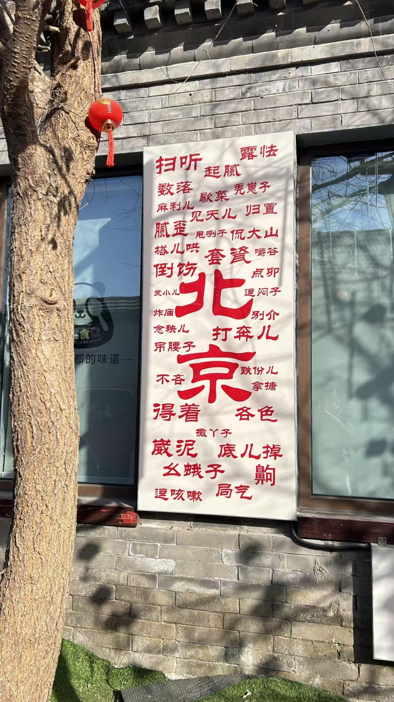

北京话俗称"京片子"，是最有特点的方言之一，属于官话方言的北京官话，是普通话的基础。北京话最鲜明的特点就是儿化音多，说话的时候舌头一卷，就带了个"儿"字尾，听着就那么亲切、那么有味道。
北京话的儿化音不是随便加的，有一定的规律，一般表示小、可爱、亲切的意思。比如"今天"叫"今儿"，"明天"叫"明儿"，"女孩"叫"小妞儿"，"好玩"叫"好玩儿"，"事情"叫"事儿"，"一点"叫"一点儿"，"特别棒"叫"倍儿棒"，"走了"叫"颠儿了"。
北京话还有很多特有的词，比如"您"是北京人最常用的尊称，见谁都叫"您"，特别客气；"劳驾""借光"是请人帮忙、让路的时候说的；"甭"就是"不用"；"撒丫子"就是跑了；"逗你玩儿"就是开玩笑；"局气"就是仗义、守规矩；"靠谱"就是可靠；"麻利儿"就是快点。
北京话说话快，儿化音多，语气词多，幽默风趣，客气礼貌，听北京人说话，就像听相声似的，特别有意思。走在北京的胡同里，听大爷大妈一口地道的京片子，那才是真正的北京味儿。
常用北京话：您、劳驾、借光、甭、倍儿棒、颠儿了、局气、靠谱、麻利儿、逗你玩儿
特点：儿化音多，语速快，幽默客气，亲切自然，京味儿十足